9. Appendix: How to setup VM for Lagopus software router on VirtualBox¶
This section describes how to setup Oracle VirtualBox VM for Lagopus software router.
9.1. Known issues¶
- Tag Vlan (802.1q) does not work when running Lagopus on VirtualBox VM
- When using (emulated) Intel NICs (igb) on VirtualBox VM with DPDK, packet with vlan tag would not be received properly with
rte_eth_rx_burst(). This is confirmed not only on Lagopus but also on DPDK sample apps without Lagopus. - Do not use Oracle VirtualBox VM when testing Tag Vlan (802.1q).
- When using (emulated) Intel NICs (igb) on VirtualBox VM with DPDK, packet with vlan tag would not be received properly with
9.2. Software Versions¶
- VirtualBox: 5.2.12 r122591
- Host OS: Windows 10
- Guest OS: Linux [Ubuntu Server 18.04 LTS]_
9.3. About VirtualBox¶
ORACLE VirtualBox is x86 and AMD64/Intel64 virtualization product which is freely available as Open Source Software under the terms of the GNU General Public License (GPL) version 2.
You could run VirtualBox on host OS running Windows, Linux, Macintosh, and Solaris.
Refer to the [VirtualBox web site]_ For more information about VirtualBox.
9.4. Download and Install VirtualBox¶
- Download VirtualBox installation image from: https://www.virtualbox.org/wiki/Downloads
- Install VirtualBox.
9.5. Create VM¶
Start “Oracle VM VirtualBox Manager” (Management GUI)
Click “New”
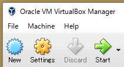Enter Name (=any), Type (=Linux), Version (=Ubuntu (64-bit)).
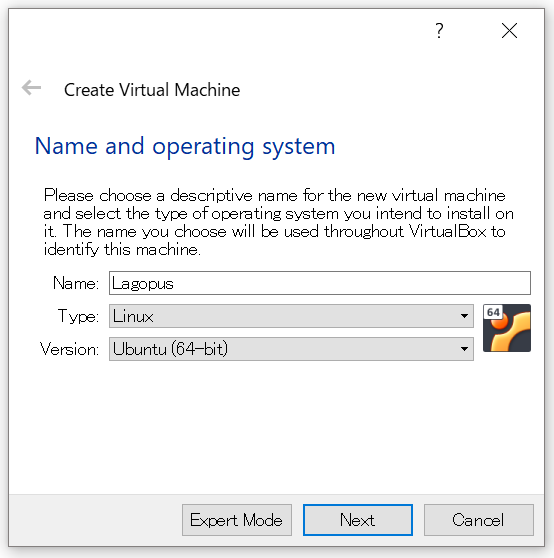Set Memroy Size (>=4GB recommended. 4GB in this example.)
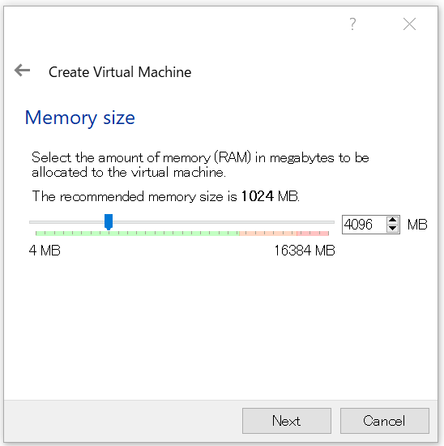Set Hard disk size (default = 8.00 GB)
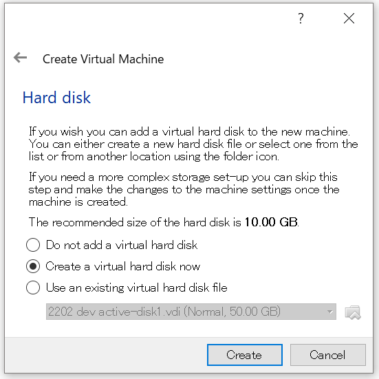Set Hard disk file type: default = VDI (VirtualBox Disk Image)
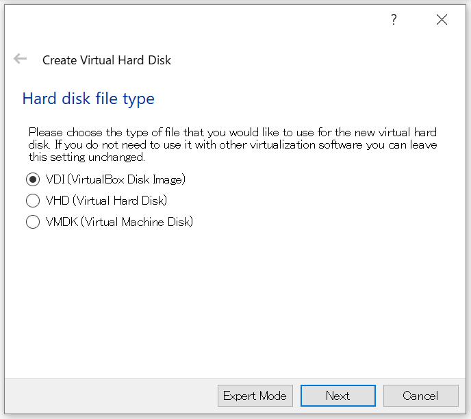Set Storage on physical hard disk: default = Dynamically allocated.
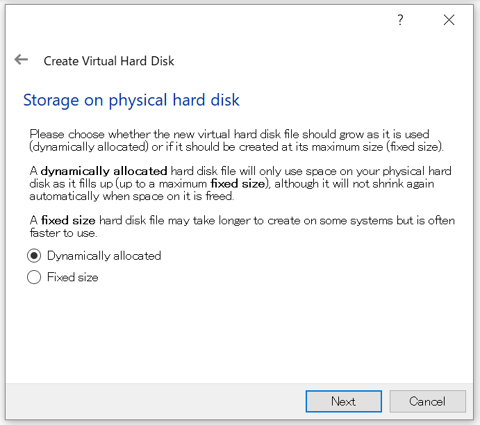Set File location and size: minimum = 10GB, >=20G recommended.
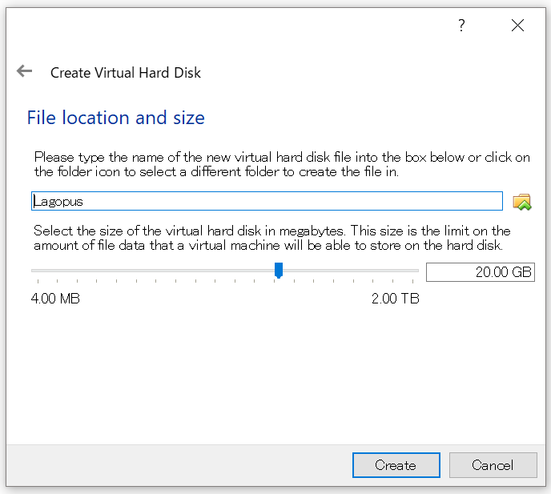Click “Create” and VM will be created.
9.6. VM Network Setting¶
9.6.1. Add two (3) new adapters as data ports used by Lagopus.¶
- Adapter 1 (available by default)
- management port (Internet access, SSH from Host OS)
- Adapter 2/3/4 (new)
- Lagopus data ports
Steps:
Select VM you just created. Right click and select “Settings”
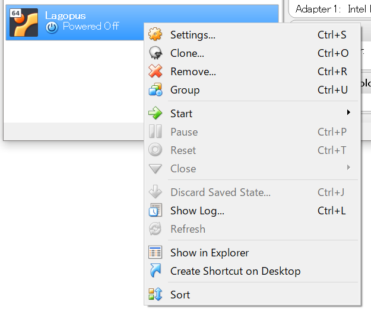Select “Network” -> “Adapter 2” and configure below. Do the same for “Adapter 3” and “Adapter 4” as well.
- Enable Network Adapter: enable
- Attached to: Internal Network
- Name: intnet1 (intnet2,3 for Adapter 3,4)
- Advanced: Adapter Type: Intel PRO/1000 MT Desktop (82540EM)
- Advanced: Promiscuous Mode: Allow All
Note
NIC supported by DPDK is listed here: http://dpdk.org/doc/nics
9.6.2. Configure “Port Forwarding” to enable SSH from host to guest.¶
Select “Network” -> “Adapter 1”
Click “Advanced: Port Forwarding”
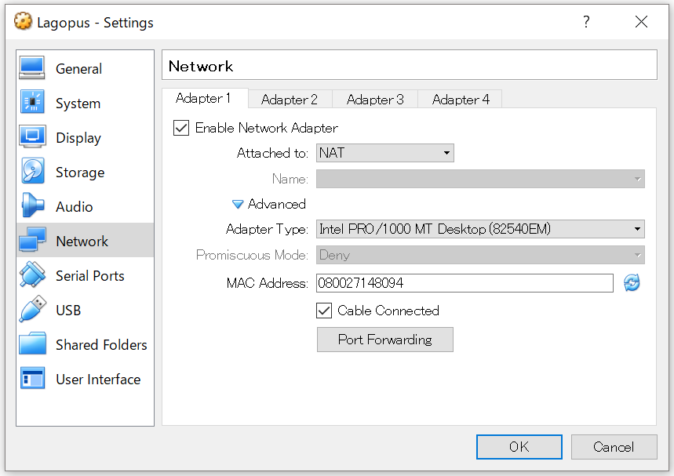Click “+” mark on right. Set below to newly created row.
- Name: rule_name you like. ex: ssh
- Host Port: port used on Host OS. ex: 2201
- Guest Port: 22 (SSH)
9.7. VM Processor (CPU) Setting¶
Select “System” -> Processor” to modify CPU cores to be assigned to the VM.
4 or more CPU cores are recommended when using DPDK.
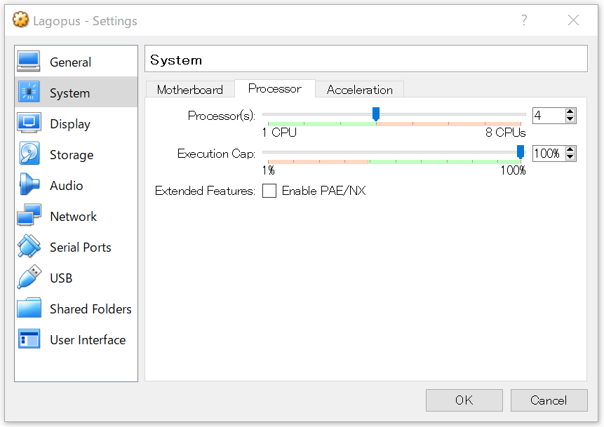
9.8. Install Guest OS (Linux / Ubuntu)¶
Download Guest OS ISO:
- [Ubuntu Server 18.04 LTS]_ (ubuntu-18.04-live-server-amd64.iso)
Start VM by clicking “Start”
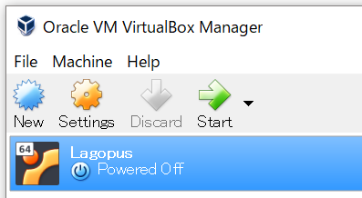At “Select start-up disk” diaglog, select ISO you just downloaded and click “Start”
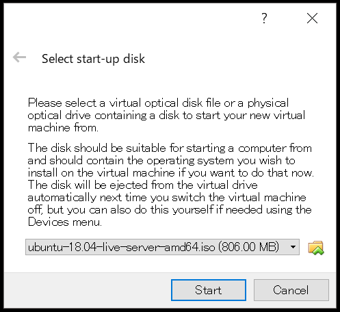Follow Ubuntu install wizard. A few points to be noted are:
- No automatic updates (for testing purpose to make package predictable)
- Software installation: OpenSSH server
Once installed, SSH to localhost:<port> where <port> is the “Host port” you configured in “Port Forwarding”.
9.9. Next Steps¶
Follow steps in How to install DPDK for Lagopus software router to continue Lagopus software switch and configuration.